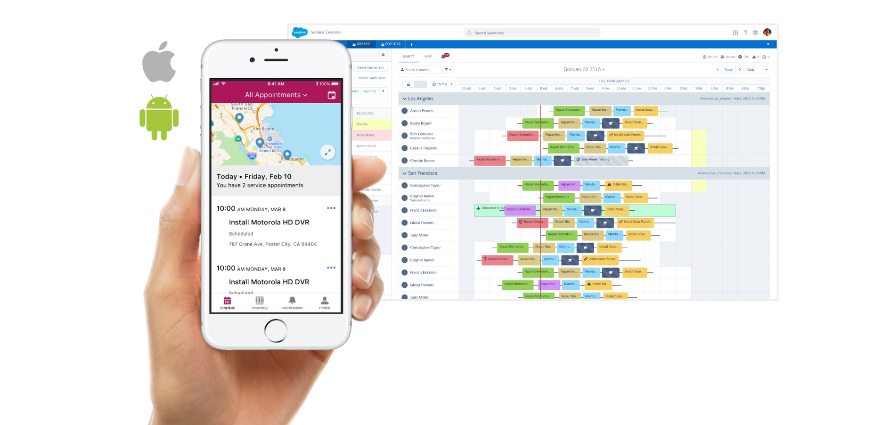
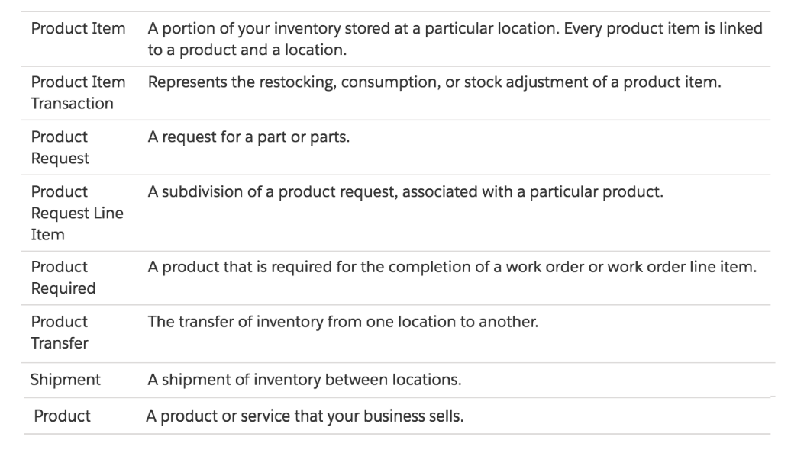
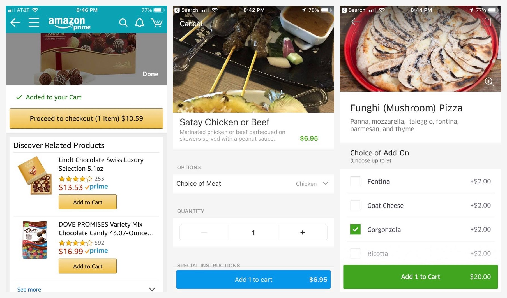
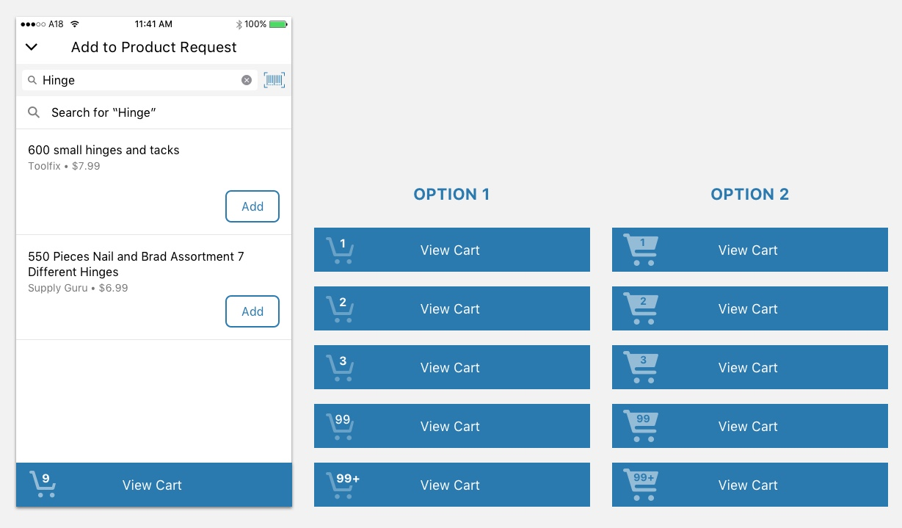
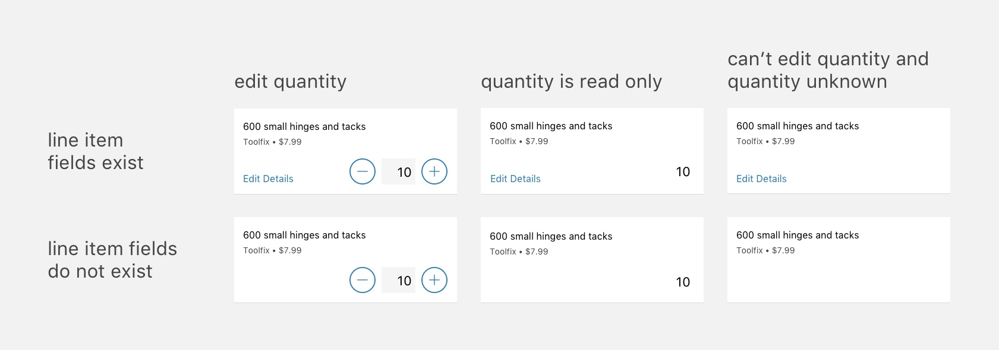
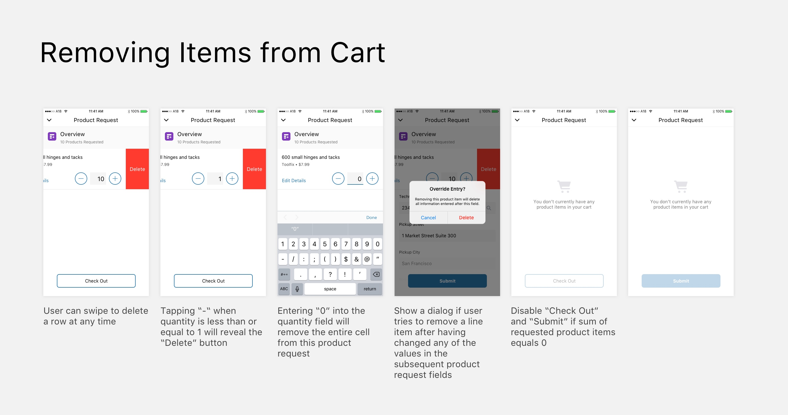
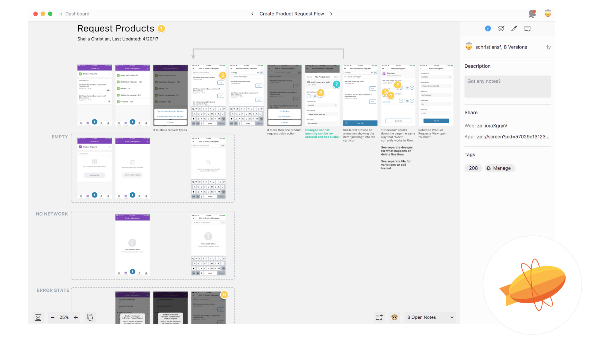

ABOUT FIELD SERVICE LIGHTNING
I’m a product designer for the product Field Service Lightning (FSL) at Salesforce. One of the projects that I worked on was supporting “Product Requests.”
FSL allows companies to benefit from the power of the Salesforce platform while managing their field service operations. The Salesforce platform is extremely extensible, which means that every design decision comes with complexity. As a designer at Salesforce, I always need to be very knowledgeable about how our product works at the technical level, as well as any business concerns that might impact our customers.
My designs need to serve not only the end user’s needs, but also those of their manager, their company, their Salesforce admin, and also Salesforce as a company. Since Salesforce is B2B and used in many industries, there are often a vast number of possible ways our designs might be configured and used by the many people who will interact with them.
Field Service Lightning Mobile App and Dispatcher Console
PROBLEM
Imagine a scenario in which a mobile worker needs to fix a broken door, but doesn’t have the tool that she needs to complete the repair. Salesforce provides a data model to customers to be able to make requests for parts and order shipments. However, our app did not yet surface this data in the out-of-the-box mobile app experience. We needed to include an experience for the existing data model in the mobile app.
Salesforce Already Provided Some Standard Objects Related to Product Requests
EXPLORATION
I explored other mobile apps that serve a similar function - letting users submit and track an order. These included Amazon, Uber Eats, and Yelp, as shown below. These apps all had some similar patterns, such as a “Checkout” flow in which users can see how many items they have in their “Shopping Cart” before confirming their order.
Amazon, Yelp, and Uber Eats All Use a Shopping Cart Metaphor
ITERATION AND DESIGNING FOR ALL STATES
At first, it seemed straightforward to design a checkout flow, since there were so many examples to emulate. However, we discovered that since our data model was particularly flexible, there were even more edge cases than usual that needed to be clearly defined through the designs.
As with any design, we iterated through many, many possible solutions before we landed on one that would match a user’s mental model, that could be implemented in Salesforce, and that looked clean and easy to use.
Designing a Shopping Cart Icon that Can Handle Any Number
Different Cell Designs Depending on Admin Configuration
Several Situations in Which Items Might Be Removed
HAND-OFF
As usual, I used a combination of prototypes, videos, images, whiteboard drawings, Google Slides and tools like Zeplin to communicate designs with PMs and developers.
I Used Zeplin to Communicate Design Specifications
Flinto Prototype of Final Flow
REFLECTIONS
This project helped me understand the value of having a close relationship between PM, engineering, and design to work collaboratively to create designs that are not only user-friendly, but also that fulfill both business and development constraints.